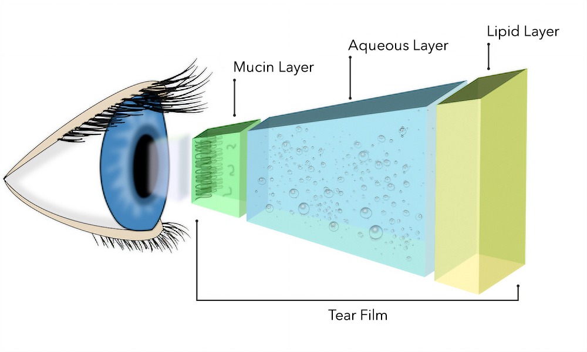

Table of Contents
=
tags:
=
Dry-eyes, I did not know it was an actual condition of the eyes. The initial diagnosis from the doctor, I merely thought, your eyes are dry and you just need a lubricant - just like how your skin would be dry and one needs some moisturizer. However, it is far more complex that a simple dryness. It can become a chronic condition
1. Tear Film Layers
In order to understand dryness, let's have a look at the tear-film layers:

Figure 1: Tear Film Cross-Section
The three layers essentially protect your cornea, without which the cornea can get damaged. This would effectively lead to distortion of image or eventual vision loss. The three layers are:
- Lipid Layer [Oil]
- Aqueous Layer
- Mucous Layer
In some cases, the 2nd and 3rd can be considered a 'single' layer, termed mucoaqueous layer with a bit of a gradient.
More information about each of the layers can be found online. The reference to this wikipedia article is a good start. In this article, I only reference the first two layers:
1.1. Lipid Layer
The main function of this layer is to protect the inner layers from evaporation. It's made up of a complex mixture of lipids that is made from Meibomian Glands. It could also happen due to Environmental reasons.
1.2. Aqueous Layer
The layer contains a plethora of salt and other proteins. The changing of the salt content can lead to various conditions of the eyes.
In either case, if the tear film is damaged, it can lead to corneal damage which can cause changes in vision - from changes in astigmatism to vision loss.
For dry-eye-disease (ded), there are essentially two three categories of
dry eyes:
- Aqueous Deficiency dry eyes,
- Evaporative dry eyes,
- Mixed (which is the most common form)
A good introduction summary of the reasons of why this may happen is introduced in the video:
1.3. Further Information and Treatments
For a long detailed information about the topic, please watch Tear Dysfunction Syndrome. In general, in my opinion, the treatment is broadly classified in two categories:
- Symptoms: External therapies which helps to mitigate the evaporation of tear film
- Food: Internal consumption of food or supplements which helps regulate the hole body
In my case, consuming omega-3 seems to have helped significantly. This anecdotal opinion certainly leads me to believe that I had an inflammation in my body. It could also be something else, afterall, I am not a doctor at all.